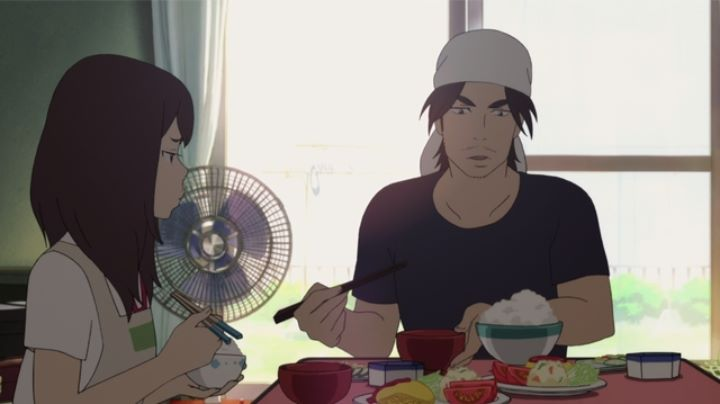

"Napping Princess" (originally known as "Ancien and the Magic Tablet" in Japan prior to the English release) had some high hopes when it was first announced. For one, original anime family films have a chance to be more accessible without viewers needing to know of an existing franchise, and the target audience helps give it a chance in international territories. Secondly, this was the first original film and first family project by director Kenji Kamiyama, the man credited for critically acclaimed anime including "Eden of the East" and "Ghost in the Shell: Stand Alone Complex." While "Napping Princess" does have a lot of good forward-thinking ideas, nothing less I would have expected, it also has some serious plot holes that keep it from being the runnaway success it could have been.The story might be best described as a modern fairy tale. It opens in the middle of a dream that takes place in a magical version of a present-day Japanese town, where a princess is locked away for her dangorous ability to use magic, despite her intentions to use it for good. The dream shows her using a computer tablet and typing her magic commands to make them come true. When Kokone wakes up, we see she is a normal high school girl (thankfully she looks and acts her age, unlike most anime), albiet with a tendancy to sleep often, hence the dreams. One day, her father, a local mechanic, is taken away by the police, and Kokone discovers it has something to do with the tablet computer he always uses to fix cars for the townspeople. So she escapes with the tablet to try to rescue her father: along the way, she finds her dreams have effects on the real world, which she uses to her advantage. The film makes it clear to adults that Kokone's father was installing self-driving modules onto the cars of the local elderly, a technology that was still not fully developed in the commercial industry, and that Kokone's perception of magic both in reality and in her dreams represent modern technology and artificial intelligence. This is a clever idea that gives the film character. While I find it hard to believe a modern teenager would be dense enough to not understand some basics behind how computers work, most children growing up today will live every day with technology that can recognize different voices and faces, and this probably comes across as magical to anyone who has never programmed code before. The driving force behind the antagonists is to prepare self-driving cars for the opening ceremony of the 2020 Olympics, which happen to be set in Japan that year. While this will instantly date "Napping Princess" a few years from now, current trends suggest new films today would be forgotten by then anyhow, and it is refreshing to see a story grounded in real developments of the modern world. That's about all the praise I can give to the story, however. It feels like a family film that talks down to be made clear to children, more so than most films regardless of their target audience. The main nemisis is a bearded man in a suit planning to steal the tablet to leverage taking over Japan's largest car company: at one point, Kokone's father sends her a text message saying "Don't Trust This Guy," sending a picture with him in the background, clasping his hands with a grin that makes him look like a "Care Bears" henchman. Aside from some strange character choices, the use of dreams as a scapegoat in the story ruins any attempt to follow along. Initially, it is made clear that the idea of magic in dreams having an effect on the real world was just a series of coincidences, but it doesn't explain how some other characters recognize being in and out of her dreams, and essentially the last third of the movie is a giant dream setpiece that throws and logic out the window. It was as if the writers simply didn't know how to write large parts of the plot, and decided to rely on dream sequences to cover it up. Had the entire dream aspect been removed, the sense of fantasy would be largely gone, but at least the film could be followed! And it would allow commiting more to making the real use of technology magical in its own right. Director Kamiyama had also written the script, but this isn't his first time writing, so I suspect trying to make something for younger audiences caused the slip up. The visuals are a bit hit-and-miss. The character designs are similar to Kamiyama's past works, where body proportions are more grounded, but with rounder angles and pouting-lip faces. It still looks unique to most anime, but I don't know that I'm a fan. The backgrounds are generally made with better hand-painted detail, pushing the production to be more worthy as a feature film. The animation suffers more than I expected for a film: while characters are expressive, most shots animate them simply, and the use of 3D animation for some mechanical elements don't blend well. The music is soothing, but the voice acting generally lacks any emotional heft, largely due to the dialogue they say in the script.Kamiyama is a talented man when it comes to interesting plot ideas and incorporating forward-thinking science. I would like to see him try again to make another family feature, but he really needs another writer at his side to polish the final product. Unfortunately, with talented directors such as Makoto Shinkai and Mamoru Hosoda making stronger works, it will be difficult for him to fit into that niche.
- "Ani" More reviews can be found at : https://2danicritic.github.io/ Previous review: review_Nahuel_and_the_Magic_Book Next review: review_Nausicaa_of_the_Valley_of_the_Wind